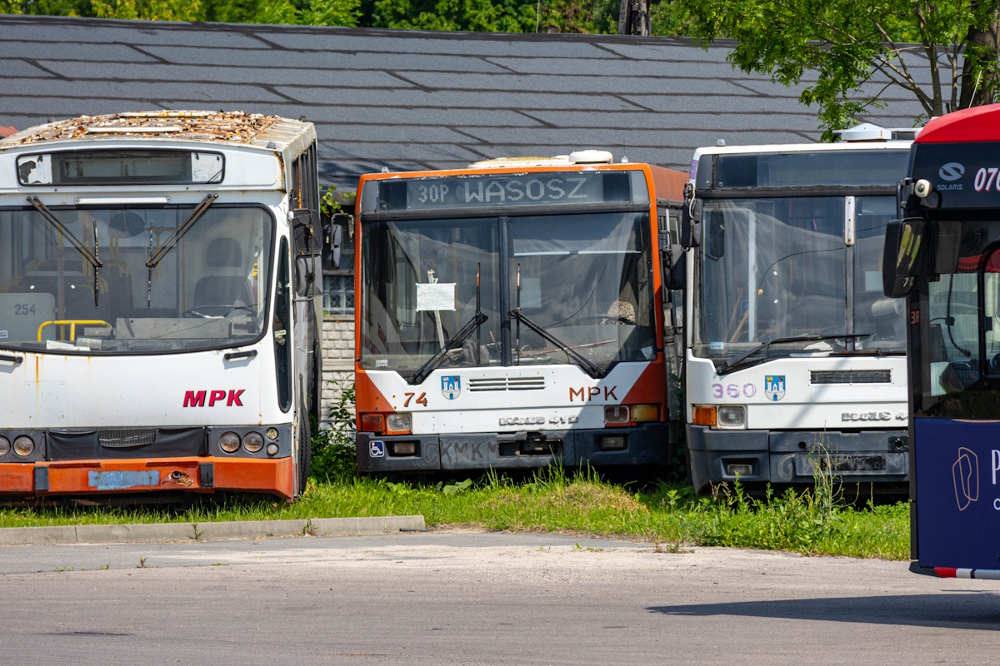

Petycja w sprawie remontu Ikarusa 412 nr 74

Lista poparcie na dole strony
TREŚĆ:
PETYCJA W SPRAWIE
sfinansowania remontu zabytkowego autobusu Ikarus 412
o numerze bocznym 74 należącego do MPK w Częstochowie S.A.
Zwracam się z wnioskiem o zabezpieczenie środków w budżecie miejskim na odremontowanie zabytkowego autobusu Ikarus 412 o numerze bocznym 74 należącego do Miejskiego Przedsiębiorstwa Komunikacyjnego S.A., który obecnie oczekuje na remont na terenie zajezdni autobusowej przy Alei Niepodległości.
Uzasadnienie:
- Autobus Ikarus 412.08A jest jedynym zachowanym egzemplarzem tego typu w Polsce, co podkreśla jego unikalny charakter który byłby wstanie przyciągnąć do miasta entuzjastów transportu, techniki, motoryzacji czy historii z całego kraju
- Autobusy tego typu były pierwszymi niskopodłogowymi pojazdami w Częstochowie, co stanowi ważny przełom w historii komunikacji miejskiej w Częstochowie i rozpoczęcie nowej ery nowoczesnej komunikacji i dostępności transportu dla każdego
- Autobus stanowi wyjątkową wartość historyczną, a im dłużej czeka na remont utrudni jego wykonanie ze względu na pogarszający się stan techniczny przez warunki atmosferyczne oraz utrudnione pozyskanie części
- Autobus może promować korzystanie z komunikacji miejskiej, organizując promujące ją wydarzenia (na przykład wakacyjna linia zabytkowa), zaprezentowanie odnowionego zabytku pokaże dbałość miasta o swoją historią oraz równie wysoki poziom zadbania liniowych autobusów. Pojazd można również wykorzystać na normalnych kursach promując historię miasta również w zwyczajne dni. Szczególne znaczenie może to mieć wśród młodszych mieszkańców miasta, zachęcając ich do poznawania jego historii i uczestniczenia w życiu lokalnej społeczności.
- Autobus można wykorzystać do promocji miasta wykorzystując go na turystycznej linii 034, na miejskie wydarzenia (na przykład linia dowożąca na koncerty) lub specjalne wydarzenia tematyczne (na przykład Industriada). Kursowanie jedynego w Polsce egzemplarza dodatkowo będzie promować odwiedzanie miasta na takie okazje.
- Wyremontowanie pierwszego pojazdu pozwoli na rozpoczęcie budowy kolekcji historycznych autobusów w mieście, ułatwiając w przyszłości remont kolejnych i tworząc zalążek nowych wydarzeń gdzie można je wykorzystywać.
- Autobus może uczestniczyć również w wydarzeniach, takich jak zloty zabytkowych autobusów, co może promować miasto w innych regionach kraju.
- Odremontowanie tego autobusu w Częstochowie pozwoli na utrzymanie unikalnego elementu dziedzictwa technicznego w całym kraju, co jest ważne dla wielu entuzjastów tych tematów.
×